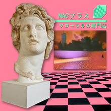

Ontology:
The Four Causes
Dr Shane V Crowley
Press down for controls and right to progress
Interacting with the Slides
📺Full screen: press the F key
🎮View video controls: hover cursor over video
👩🎨 Draw: click icon or press C
🌈Pen colour: press X to cycle and Y to revert
💁 Options and Info: click icon or press M
To view the video just follow the link:
👉https://youtu.be/dYyaDflXrpoYou can also scan the image with your phone ☎️:

Giving Explanations
Question: what is a statue?
Answer: a thing made of stone
Seeking Better Explanations
- What is it made of. . ?
- How is it made. . ?
- What is its structure. . ?
- Which purpose does it have. . ?


Food =
$$matter + process + form + function$$
Aristotle often used crafts (techne) as examples in his ontological works. When extended to 'natural' (biological) things his theory encounters problems. Biologists have largely abandoned the idea of an organism having a purpose (telos) but there is still some value in Aristotle's hylomorphism when applied to technology.
Is this unscientific?
Francis Bacon rejected the formal and final causes, urging
scientists to focus on matter and motion.
Epistemological structure of food science

Thinking narrowly
- Materialism: food is what it is made of ("matter in motion", "food is a set of nutrients")
- Functionalism food is what it does ("form follows function", "as long as it tastes good")
Conclusion
Don't think narrowly. . .
shane.crowley@ucc.ie